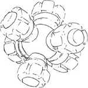
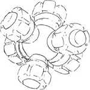

| MS-06FZ Zaku Kai Space Combat Limited Production Zeon Duchy Mobile Suit |
|
General and Technical Data |
|
|
Model number: MS-06FZ Code name: Zaku Kai Unit type: limited production space combat mobile suit Operator: Zeon Duchy Dimensions: head height 17.5 meters Weight: empty 56.2 metric tons; max gross 74.5 metric tons Construction: titanium/ceramic composite Powerplant: Minovsky type ultracompact fusion reactor, output rated at 976 kW Propulsion: rocket thrusters, 3 x 24500 kg, 2 x 3000 kg Performance: thruster acceleration 1.07 G, maximum ground running speed 103 km/h Equipment and design features: sensors, range 3200 meters Fixed armaments: None. Optional hand armaments: 90mm machinegun, clip-fed, 32 rounds per clip, mounts grenade launcher; 280mm Zaku bazooka, 4 round magazine; heat hawk, battery powered; 3x grenade Magnetic Storage Racks: 5, primary rack on backpack, one secondary rack on either hip. Left hip rack can mount up to four MMP-80 clips. 2 ammunition racks on front hips. Legs can additionally mount 3-tube missile launchers or panzer fausts. |
|
| Technical and Historical Notes | |
|
Though production of Zaku-series mobile suits is beginning to taper off in the face of the newer heavy-assault Dom mobile suit, the Zeonic Corporation continues to punch back by improving old designs. Quite possibly the last Zaku variant to be produced, the Zaku Kai is a fine mobile suit.
The bulkier, tougher Zaku Kai is a greatly hiked-up design, featuring numerous improvements over the original MS-06F and J-types. A titanium/ceramic composite armor plating has been used, freeing up extra weight for the implementation of much more powerful thruster arrays. Standardized components allow Zaku Kai units to be repaired in the field using salvaged parts from older Zeon mobile suits, and its simplified interior makes every Zeon mechanic quite pleased. The only possible downside to the Zaku Kai is fuel consumption. It maintains a much higher thrust with the same fuel capacity, roughly halving its maximum sortie time. The Zaku Kai's primary weapon is a 90mm machinegun stepped up from the popular MMP-80. This heavier weapon's combat prowess is about the same as the stock Zaku rifles in use by several mobile suit series, but is still somewhat lighter and eaiser to use. The usual retinue of heat hawk and grenades has been maintained.
Another boon to the Zaku Kai is the greatly increased armoring around the cockpit. This substantially improves pilot survivability in situations where the mobile suit has been completely disabled by enemy fire. Altogether, it is quite simply the best Zaku currently in production.
|
 RPG quick stats sheet
RPG quick stats sheet | Weapons and Features | |


  
Zaku II FZ cockpit. |
|